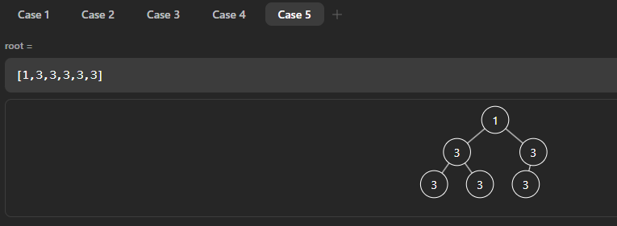

随便聊聊
⭐️⭐️⭐️左神b站主页，推荐关注⭐️⭐️⭐️
这本书记录我学习左神算法课过程中的笔记和一些想法，章节基本按照B站课程的顺序排列。之前的笔记在项目的README里面越来越长，查看也不太方便，就想整理为这种电子书的结构。
左神原repo的算法实现都是Java写的，因为我现在的工作主力语言不是rust，但是我又十分喜欢这门语言，所以我的实现基本上都用rust来写（除了链表相关题目和一些OJ不支持rust的题目使用了C和C++）。不过编程语言只是实现算法的一种手段，用什么都可以，如果追求性能推荐使用静态语言（C/C++），其他情况只要顺手即可。算法的核心永远是解决问题的思路！
虽然我觉得现在自己才接触算法，乃至算法竞赛相关的内容太晚了，但是从追求进入大厂的目标到现在有些乐在其中的过程，我还是很庆幸接触了这门课程。希望能在之后的工作和学习中，永远不丢掉对算法的学习热情。
二进制
二进制表示数字
二进制数每一位（bit）可以表示0和1，计算一个二进制数的十进制表示就是从低位到高位累加2^i得到结果。比如1001，计算十进制数为1 * 2^0 + 0 * 2^1 + 0 * 2^2 + 1 * 2^3 = 9
二进制表示非负数和负数
- 一个n位的二进制数表示的无符号数字范围是
2^n个 - 一个n位的二进制数表示的有符号数字范围是
-2^(n-1)~2^(n-1)-1。每个数字的首位表示符号，0为正、1为负
计算一个正数对应的负数的二进制表示的负数
将所有位减1再取反。例如5的二进制表示0101，它的负数计算过程为
0101 - 1 = 0100!0100 = 1011
1011就是-5的二进制表示，相反，根据一个二进制数来判断有符号数的值，则将整个数取反再加1
!1011 = 01000100 + 1 = 0101
正负数的二进制表示方式设计原因
这种表示方式可以在负数和非负数以任何出现顺序做加法时不需要加分支判断即可进行，例如-5 + 2
1011 + 0010 = 1101!1101 = 00100010 + 1 = 0011
0011是3，即1101表示-3，所以计算结果正确
计算机不处理数字计算的溢出情况，需要程序员自己保证
由于没有分支判断，加法的计算速度很快，计算机中的其他基本运算可以认为是通过加法实现的，所以其它的计算-、*、/的计算性能也会提高
位运算
位运算不会应用短路计算，逻辑计算会应用短路计算，短路计算即当前面某一步计算结果可以代表整个表达式结果则不再计算后续的表达式结果
|
当存在一个位为1时，计算结果为1，否则为0
#![allow(unused)] fn main() { println!("1 | 1 = {}", 1|1); println!("1 | 0 = {}", 1|0); println!("0 | 1 = {}", 0|1); println!("0 | 0 = {}", 0|0); }
&
当存在至少一个位为0时，计算结果为0，否则为1
#![allow(unused)] fn main() { println!("1 & 1 = {}", 1&1); println!("1 & 0 = {}", 1&0); println!("0 & 1 = {}", 0&1); println!("0 & 0 = {}", 0&0); }
^
当两个位相同时为0，否则为1
#![allow(unused)] fn main() { println!("1 ^ 1 = {}", 1^1); println!("1 ^ 0 = {}", 1^0); println!("0 ^ 1 = {}", 0^1); println!("0 ^ 0 = {}", 0^0); }
<<、>>、<<<、>>>
带符号左移/右移，无符号左移/右移（即右移用0补位）
对于非负数，左移n位等同于*2^(n)，右移n位等同于/2^(n)
取反
~是取反符号，每个数的获取它的正反值都等于对它取反再加1
#![allow(unused)] fn main() { println!("-7 = {}", !7+1); println!("7 = {}", !(-7)+1); }
打印二进制数
要打印二进制的某一位，可以将其它位与0做&操作，要打印的位与1做&操作，如果剩下的数不为0，那么打印1，否则打印0
#![allow(unused)] fn main() { let num: i32 = -169; for i in (0..32).rev() { if (num >> i) & 1 != 0 { print!("1"); } else { print!("0"); } } }
三种简单排序
⚠️注意边界条件，数组元素如果是0或1个，那么本身有序无需进入算法步骤
选择排序
一句话总结：i=0，将[i..N]位置上的最小值找到，然后与i位置的数交换位置，直到i==N-1
时间复杂度O(N^2)
冒泡排序
一句话总结：在[0..=N-1]位置范围内，通过两两比较将最大值移到N-1位置上，然后缩短范围[0..=N-2]继续，直到范围为[0..1]
时间复杂度O(N^2)
插入排序
一句话总结：每次都保证前i位有序，将i+1位认为无序，然后和前i位倒序比较，如果无序则交换顺序
fn insert_sort_2(arr: &mut [i32]) {
let n = arr.len();
if n > 1 {
for i in 0..n - 1 {
let mut j = i + 1;
while j > 0 {
if arr[j] <= arr[j - 1] {
arr.swap(j, j - 1);
j -= 1;
} else {
break;
}
}
}
}
}- 最好情况（数列有序）时间复杂度为
O(N) - 在数列元素个数较少（几十个）时使用插入排序表现要比快排、归并排序好，因为它很简单、小数据集的缓存性能好
对数器
对数器是一种验证算法的方法，它的实现步骤大概分为
- 分析要解决的问题
A - 实现一个不考虑时间复杂度的暴力解法
S1，最简单的思路基本都是正确的，一定要保证这里算法的正确性 - 实现几个考虑时间复杂度的优雅解法
S2、S3等 - 开始创建测试用例，即利用随机数生成的方法生成符合题目要求的测试数据
- 使用生成的测试数据对几个解法进行测试，小数据量测试
- 如果小数据量没有问题，那么逐渐增加数据，直到暴力解法达到无法计算的程度，如果其它更好的解法在短时间内还可以计算出答案，则基本可以确定更好的解法思路是正确的
- 如果在测试过程中出现了问题，那么减少数据量，通过打印中间变量/debug的方法，开始查找错误，这个过程中还可以打印原始测试数据，对比不同方法的结果来判断
二分搜索
有序数列
问题描述：在有序数列中找到一个指定数字，如果存在返回它的索引，否则返回-1
解法：二分搜索模版，如果中点不是答案，大于则往左找，小于则往右找，直到终点等于指定数字返回答案，或者左索引大于右索引返回-1
fn binary_search(arr: &[i32], n: i32) -> bool {
let len = arr.len();
if len == 0 {
return false;
}
let mut beg = 0;
let mut end = len - 1;
while beg <= end {
let mid = beg + ((end - beg) >> 1);
match arr[mid].cmp(&n) {
std::cmp::Ordering::Equal => return true,
std::cmp::Ordering::Less => {
beg = mid + 1;
}
std::cmp::Ordering::Greater => {
// usize如果为负数在release编译下会wrapping-sub，导致越界
if mid > 0 {
end = mid - 1;
} else {
break;
}
}
}
}
false
}问题描述：找到一个大于等于数字N的最靠左的数字
解法：如果中点大于等于N，那么记录答案往左找，如果小于N往右找，当查找完毕后返回答案
问题描述：找到一个小于等于数字N的最靠右的数字
解法：如果中点小于等于N，那么记录答案往右找，如果大于N往左找，当查找完毕后返回答案
计算中点索引位置的方法
一个长度为N的数列的开头索引总是0，最后一个元素索引是N-1，那么中点是(0+(N-1))/2，另外一种计算中点的方式是0+((N-1-0)>>1)，这样写的作用是防止两个索引位置直接相加之后会超过索引值数据类型的最大值造成溢出
无序数列
峰值问题
问题描述：在一个数列中，峰值的含义是，在位置i上，如果它的值大于左右两边的值，且相邻数不允许相同，认为在数列左端和右端的数的值为最小。找到数列中任意一个峰值的位置，如果没有则返回-1
解法：按照题中的指示，先判断第一个数和最后一个数是否为峰值，如果两个数都不是峰值，那么可以判断峰值一定在中间（这说明从两端开始数值都是上升趋势，且相邻数不允许相同，那么在中间一定会有一个峰值），此时认为二分搜索的起点为1，终点为N-2，判断中点是否为峰值，如果不是，如果小于左边的数，那么往左继续查找，否则往右继续查找
启发：如果可以确定问题范围缩小的规律，就可以使用“二分”解决同类问题
二分搜索的时间复杂度
二分搜索的时间复杂度是O(logN)，N表示数列的长度，因为每一次循环会将搜索范围缩小一半，所以问题的总规模就是2的搜索次数的次方，例如一个长度为i32::MAX的数列，它的长度为2^31-1，所以最慢经过31次搜索就可以解决问题
时间复杂度和空间复杂度
概念
常数时间操作
和问题规模大小没有关系。例如数字运算操作，因为位数固定，所以同类型运算消耗的时间差不多。例如数组寻址，由于是计算索引获取数组数值，所以读取任意位置元素时间差不多。哈希函数的访问也是常数操作
非常数时间操作
和问题规模大小有关，例如链表的更新或者删除操作，由于链表在内存中不是连续存放，所以根据节点数量不同，获取不同位置的节点所需要的时间也是不同的
时间复杂度
表示运行时间和数据量的关系
使用问题规模（也就是数据量）来计算，将每一次计算的数据量相加，然后去掉非最高阶的式子，留下的最高阶式子去掉常数项，就是O(x^N)的复杂度
常数时间操作的时间复杂度是O(1)
和数据量相关的变量的阶数对于运行时间的意义最大，相对来说低阶项和常数项不重要
例如插入排序，如果是最差情况（倒序排列），那么时间复杂度就是O(N^2)，但是最好情况时间复杂度变成了O(N)，要确定时间复杂度需要用最差情况估计
严格固定流程（没有随机性）的算法必须评估在最差情况下的时间复杂度
对于包含随机过程的算法，即每一个运算单元可能有不确定性的执行次数，那么最差情况就是算法无法执行完成，即随机性无法满足算法继续执行的概率。所以需要使用平均复杂度或者概率上的期望复杂度来评价
空间复杂度
额外空间复杂度
入参和出参的空间不占用空间复杂度计算项。算法流程中为了支持实现算法所开辟的新的内存空间的数量就是空间复杂度。如果没有利用额外空间，那么空间复杂度为O(1)
最优解
各个算法中哪个算法的时间复杂度更低阶就更好，在这种方法下追求更低的空间复杂度
复杂度的均摊
以动态数组为例，如果动态数组每次扩容都是加倍，扩容操作就是一个非常数时间操作，那么在向长度为1的动态数组插入N个数时，在插入第2*N个数时问题规模变为2*N+1，那么插入8个数，就是1+1+2+1+4+1+1，小于2*8，推知插入n个数，扩容的时间复杂度也小于2*N，那么总的时间复杂度就是说O(N)，均摊到N次插入数据，扩容对于每次插入元素的时间复杂度就是O(1)
计算均摊时间复杂度主要是为了好估计算法的整体时间复杂度
估计复杂度的误区
- ⚠️估计时间复杂度不能简单根据循环的个数或者代码结构判断量级
- 一个循环完成的冒泡排序时间复杂度还是
O(N^2) - 两个循环达成的
O(N*logN)的复杂度，for (i = 0; i < N; i++) {for (j = i; j < N; j+=i) {...}}。(1+1/2+1/3+...+1/N)*N的结果收敛于O(N*logN)（调和级数）
- 一个循环完成的冒泡排序时间复杂度还是
时间复杂度比较
常见的时间复杂度如下，按照好坏优先级排序
O(1)O(logN)O(N)O(N*logN)O(N^2)O(N^3)- ...
O(N^k)O(2^N)O(k^N)O(N!)
算法和数据结构分类
算法
- 硬计算类算法：精确求解，最终结果一定是问题的答案，例如二分搜索
- 软计算类算法：一定条件下的最优解，注重逼近解决问题的答案，例如机器学习算法
数据结构
- （物理）连续结构：在（虚拟）内存中是连续存储的，只需要知道首地址和偏移量就能直接查找指定位置元素。例如数组、scalar类型的值
- （物理）跳转结构：在（虚拟）内存中是不连续存储的，需要保存不同节点的地址才能查找。例如链表、树、图
任何一种数据结构都是通过这两种结构组合起来构成的
单双链表和堆栈
因为这两个数据结构都比较简单，就把这几节课放到一起记录了
单双链表
按值/引用传递参数
Java除了基本类型以外都是按引用传递，但无论是按值还是按引用传递，都是对原类型的拷贝，如果是基本类型就直接拷贝具体值，而引用类型是拷贝了引用（内存地址）本身然后传递。引用类型就是值在堆上保存，栈上只保存堆上的内存地址，函数传递过程中只使用地址
⚠️rust实现链表相关内容参考这个项目通过很多链表学习rust
单链表
内存中定义的结构，它包含一个值和指向下一个节点的指针。最后一个节点的下一个节点指向空（null）或者不存在
struct ListNode {
val: i32,
next: Option<Box<ListNode>>,
}双链表
和单链表类似，只不过每个节点除了有指向下一个节点的指针还有指向上一个节点的指针
struct DoubleListNode {
val: i32,
last: Option<Box<DoubleListNode>>,
next: Option<Box<DoubleListNode>>,
}链表的反转
实现过程需要使用一个临时变量来保存上一个节点的值，初始为null，从链表头开始遍历，先保存当前节点指向的下一个节点，然后将当前节点的下一个节点指向临时变量，然后重新对临时变量赋值为当前节点，然后将遍历节点修改为之前保存的节点。对于双链表的翻转，在修改指向下一个节点的同时还要修改指向上一个节点的指针
// 单链表翻转
let mut last = None;
for !head.is_none() {
let t = head;
head.next = last;
last = head;
head = t;
}链表相关题目
合并两个有序链表
问题描述：有两个有序链表，合并两个链表为一个有序链表
解法：特例是两个链表任意为空则返回另一个链表。首先找到最小的节点作为最终返回的结果，然后两个遍历节点分别指向该节点的下一个和另一个链表的头节点，开始比较两个遍历节点，并使用一个next指针来修改指向最终结果链表的下一个节点，等到两个遍历节点任一为空时，将剩余的节点拼到引用的指向下一个节点的指针上即完成算法
⚠️可以利用一个dummy节点作为头节点，使用它的一个可变引用来逐次拼接指向两个链表节点的指针所对应的最小值，当任意指针为空时，拼接剩余链表的节点，然后返回dummy节点指向的下一个节点即可
两个链表相加
问题描述：两个链表表示两个数字，链表头从个位开始，结果是一个新链表
解法：两个遍历指针指向两个链表头部，遍历过程中如果指针非空就是本值，否则为0（当任意指针为空就不再遍历），将两个指针指向的节点值相加，注意保存进位，生成一个新节点保存到最终结果中
划分链表
问题描述：给定一个链表，再给一个特定值x，将链表重排，小于x的在左，大于x的在右，但是不能改变原链表元素的相对次序
解法：四个裸指针初始为null，分别表示所有小于x的子链表的头尾指针和大于等于x的子链表的头尾指针，开始遍历链表，如果当前节点小于x且小链表为空，那么小头和小尾都指向当前节点，如果小链表不为空则小尾的next指针指向这个节点，更新小尾节点为它的next指针。对于大链表使用相同逻辑。最后判断，如果小头为空，那么直接返回大头，否则小尾拼接大头，返回小头即可
队列和栈
队列和栈是一种逻辑结构，可以使用链表或者数组的物理结构实现。两种结构的特点如下
- 队列：先进先出（FIFO），新来元素从尾部进，从头部出
- 栈：后进先出（LIFO）
队列
用链表实现，一条单链表就可以实现队列，保持两个指针，头指针总是指向头节点，尾指针指向最近被插入的数据，当移除数据的时候，头指针返回节点前移动到下一个节点
用数组实现，做题过程中元素个数确定，可以初始化一个长度为N的数组，头尾指针初始化为(0, 0)，队列的范围是[0, n)，当l < r时，认为队列非空，否则队列为空
// 队列数据结构应实现的接口
// 查看队首元素
fn peek() -> ∈
// 查看队尾元素
fn tail() -> ∈
// 向队列插入元素
fn offer(e: Element);
// 移除队首元素
fn poll() -> Element;
// 返回队列长度
fn len() -> usize;
// 队列是否为空
fn is_empty() -> bool;栈
用数组实现，一个栈顶指针记录栈顶元素即可
// 栈数据结构应实现的接口
// 查看栈顶元素
fn peek() -> ∈
// 向栈插入元素
fn push(e: Element);
// 移除栈顶元素
fn pop() -> Element;
// 返回栈的大小
fn len() -> usize;
// 栈是否为空
fn is_empty() -> bool;环形队列
数组实现的队列，被释放的元素（对应的数组位置）可以重复利用，只要同时在队列里的元素不超过整个数组大小，就可以无限利用
⚠️不使用头尾指针来判断循环队列的当前长度，而是使用一个size变量来记录
队列和栈的相关题目
栈和队列相互实现
用栈实现一个队列
问题描述：只有标准栈，实现一个队列结构
解法：使用两个栈，一个in栈，一个out栈。当取数时，如果out栈为空，把in栈的内容全部通过出栈和入栈操作导入out栈，每次导入数据的时候需要将in栈所有内容导出
⚠️时间复杂度，对于栈实现的队列，对元素的每个操作的均摊时间复杂度是O(1)，因为每个元素在这个数据结构中的生命周期就是in栈的进出和out栈的进出，即O(4*1) = O(1)
用队列实现栈
问题描述：只有标准队列，实现一个栈结构
解法：每次队列进一个元素，记录当这个元素弹出时，它之前有几个元素需要弹出后再重新插入队列。假设队列为空，先插入1，则为1，然后插入2，那么之前有1个元素需要先出队再入队，所以队列变为2<-1，对于每个新进的元素，已有的所有元素都是倒序排列，所以只需要将当前元素移动到开头即可
⚠️时间复杂度，插入元素操作是O(N)，其余方法是O(1)
最小栈
问题描述：设计一个栈，额外提供一个方法getMin()在常数时间内获取栈中的最小值
解法：使用两个栈，数据栈之外再提供一个最小栈，如果新入元素是第一个元素或者是当前记录的最小的元素，那么在两个栈同步压入元素，否则仅数据栈压数据
本题属于用空间换时间
实现双端队列
定义：在队列两端都可以进出元素，且进出顺序在两个方向都是FIFO
实现：
- 链表实现：使用双向链表可以直接实现双端队列，只需要保证链表的长度为指定的固定值即可
- 数组实现：固定数组实现一个双端队列，头尾索引总是指向头尾元素，使用
size来确定当前队列的总元素个数，尾部索引是+1后移，头部索引是-1前移，当达到最大/小值时要回到数组的头/尾索引继续。⚠️两个头尾索引最开始并没有指向某个值，所以插入第一个元素的时候，这两个索引不能变化，即两个索引总是指向头尾元素
⚠️这道题需要注意的点是对边界条件的处理
另一种解法：还可以从数组头尾各自插入，这样计算索引可以省去对边界条件的判断，单线程内速度更快（leetcode无区别），插入元素时先计算索引再插入，移除元素时先返回元素，再更新索引，索引的计算方式如下
- 从队头插入元素
front = (front + len - 1) % len - 从队头移除元素
front = (front + 1) % len - 从队尾插入元素
rear = (rear + 1) % len - 从队尾移除元素
rear = (rear + len - 1) % len
struct MyCircularDeque1 {
k: usize,
q: Vec<i32>,
size: usize,
// 头指针
front: usize,
// 尾指针
rear: usize,
}
impl MyCircularDeque1 {
/**
* Initialize your data structure here. Set the size of the deque to be k.
*/
fn new(k: i32) -> Self {
MyCircularDeque1 {
k: k as usize,
q: vec![0; k as usize],
size: 0,
front: 0,
rear: (k as usize) - 1,
}
}
/**
* Adds an item at the front of Deque. Return true if the operation is successful.
*/
fn insert_front(&mut self, value: i32) -> bool {
if self.is_full() {
return false;
}
self.front = (self.front + self.k - 1) % self.k;
self.q[self.front] = value;
self.size += 1;
true
}
/**
* Adds an item at the rear of Deque. Return true if the operation is successful.
*/
fn insert_last(&mut self, value: i32) -> bool {
if self.is_full() {
return false;
}
self.rear = (self.rear + 1) % self.k;
self.q[self.rear] = value;
self.size += 1;
true
}
/**
* Deletes an item from the front of Deque. Return true if the operation is successful.
*/
fn delete_front(&mut self) -> bool {
if self.is_empty() {
return false;
}
self.front = (self.front + 1) % self.k;
self.size -= 1;
true
}
/**
* Deletes an item from the rear of Deque. Return true if the operation is successful.
*/
fn delete_last(&mut self) -> bool {
if self.is_empty() {
return false;
}
self.rear = (self.rear + self.k - 1) % self.k;
self.size -= 1;
true
}
/**
* Get the front item from the deque.
*/
fn get_front(&self) -> i32 {
if self.is_empty() {
-1
} else {
self.q[self.front]
}
}
/**
* Get the last item from the deque.
*/
fn get_rear(&self) -> i32 {
if self.is_empty() {
-1
} else {
self.q[self.rear]
}
}
/**
* Checks whether the circular deque is empty or not.
*/
fn is_empty(&self) -> bool {
self.size == 0
}
/**
* Checks whether the circular deque is full or not.
*/
fn is_full(&self) -> bool {
self.size == self.k
}
}
二叉树及其三种序的遍历
二叉树的简单定义：任意节点只有左右两个节点的树
对于二叉树的三种序的遍历，就是在遍历时根节点所处的遍历位置，具体见下面的递归解析
- 先序遍历：中->左->右
- 中序遍历：左->中->右
- 后序遍历：左->右->中
fn traverse(root: Option<Node>) {
if root.is_none() {
return;
} else {
// 1
traverse(root.unwrap().left);
// 2
traverse(root.unwrap().right);
// 3
}
}二叉树遍历的递归序，可以派生出三种遍历顺序，递归序就是每一个非空节点，在这个函数中都会有代码中1/2/3个位置执行当前节点的操作，不同的遍历序就是在不同的位置去打印了节点
二叉树的非递归遍历
先序遍历
用栈实现二叉树的先序遍历
- 先将头节点压入栈中
- 重复以下过程直到栈为空：弹出栈顶元素，然后将该节点的右子树压入栈中，再将该节点的左子树压入栈中，这是因为要先弹出左子树，再弹出右子树
中序遍历
用栈实现二叉树中序遍历
- 先将头节点压入栈中
- 将它的左边界（它自己的左子树节点和后续所有的左子树节点）压入栈中
- 重复以下过程直到栈为空：弹出栈顶元素之后，将它的右子树及其左边界压入栈中。弹出过程就是左中右的中序遍历
后序遍历
用栈实现二叉树后序遍历（两个栈）
由于后序遍历的顺序是左右中，所以利用先序遍历（这里需要使用一个栈）的方法改为中右左的遍历顺序，然后再使用另一个栈保存之前的遍历结果，最后再依次弹出这个栈的元素就是正确结果
用栈实现二叉树后序遍历（一个栈）
- 记录当前弹出的节点（处理过的节点），也就是下一个要弹出的节点的上一个弹出节点
- 第一次压入头节点
- 如果左右子树未处理，那么压入左子树
- 查看左子树，如果它的左右子树为空，那么弹出此节点并且更新记录为弹出节点
- 继续查看栈顶节点，因为左子树处理过，所以压入右子树处理
- 如果左右子树未处理，那么压入左子树
时间复杂度
- 递归做法：由于每个节点在递归过程中会被访问三次，所以是
O(N) - 非递归做法：每个节点入栈次数可能是多次（引用），但是次数有限，所以时间复杂度也是
O(N)
空间复杂度
都是O(H)，H是树的高度，因为无论是递归还是非递归（栈），它们的最大占用空间都是树的最高高度，对于递归来说，一条边界递归完成后的函数占用空间可以被回收利用，对于非递归，栈的空间也是可以在弹出之后循环利用
Rust实现一个栈的后序遍历二叉树

在上图中的情况，如果使用Rc::eq()，它比较的是指针指向的具体值是否相等，会使得值相同的左右叶子节点被认为是同一个节点，所以在比较上一个弹出的节点和当前节点的左右子节点时应该使用Rc::ptr_eq()方法
算法笔试中的输入输出处理
填函数风格
leetcode平台的答题风格。给定一个问题，然后提供方法/类的签名（类名、方法名、参数类型/个数），只需要把解决问题的逻辑代码填充好，提交即可。网站后台会有两部分（测试数据和答案）内容，它会根据测试数据生成指定类型的参数，然后调用写好的函数，最后对比答案。这种形式比较简单清晰
ACM风格
牛客，洛谷的风格。OJ网站后台依旧是同样的处理逻辑，但是它会要求考生自己从标准输入读取测试数据，并且在代码中将结果打印到标准输出。这里推荐使用BufferReader、StreamTokenizer、PrintWriter来对标准输入/输出做一层包装，目的是减少IO次数，不同语言都有对应的API。StreamTokenizer接口会提供一个函数，它的功能是可以从一个输入流中一次获取一个非空字符串
⚠️除答案以外不要随便往标准输出打印东西
临时动态空间和全局静态空间
因为每个测试用例都需要分配的临时数组，如果知道最大的数据规模，可以只创建一个静态的最大空间（数组），然后每个测试用例都复用这个空间，由于网站后台只算累积的内存使用量，这种方式可以跳过每次动态创建内存可能会碰到的内存限制
按行读
对于一些题目，数据规模未知，只提示每个问题的测试数据是在一行中以特定分隔符划分，此时应该一次读取一行，然后自行分隔内容，再组装测试数据
递归和master公式
熟悉递归的方式
- 递归调用图：表示为一个递归调用树，根节点就是第一次函数调用，然后分解为多次递归函数调用，每个调用可以继续往下分，不同节点的区别在于它们的调用参数会发生变化，每个节点计算完成会将结果返回给父节点，任何复杂的递归都可以用这种调用图来表示
- 系统栈表示：函数第一次调用时，在内存中的函数声明（参数）、局部变量会在等待递归函数调用时被压入系统栈，然后开始进行递归调用，如果递归调用返回，那么返回值会传递给栈顶元素，此时系统会在内存中重建上下文，并且更新递归调用的返回值进行后续的计算
任何递归函数都可以改成非递归函数。原理是通过自己构建一个栈来模拟递归过程中系统栈的操作
递归代码改非递归的必要性
- 工程上一定改，因为系统栈小，代价高，所以可以在内存上自建栈实现同样的逻辑。除非问题规模可以保证无论数据量再多递归深度也不高就可以使用。同一层的递归空间可以复用，因为在一层中只有其它递归返回才能到当前的递归
- 算法题只要能通过就不用改
master公式
所有子问题的数据规模相同的递归才能套用master公式：T(N) = a*T(N/b) + O(N^c)，a、b、c都是常数。其中的时间复杂度是除了递归调用以外的程序的时间复杂度
对于可以用master公式表示的算法可以直接计算时间复杂度
logb(a)如果大于c，那么时间复杂度为O(N^(logb(a)))logb(a)如果小于c，那么时间复杂度为O(N^c)logb(a)如果等于c，那么时间复杂度为O(N^c*logN)- 补充，如果使用master公式表示算法的时间消耗为
T(N) = 2*T(N/2) + O(N*logN)，那么时间复杂度为O(N*(logN)^2)
归并排序
归并排序的基本逻辑是，对于一个无序数组，先将左边一半数据排好序，然后再将右边一半数据排好序，最后把两个有序子数组按照大小关系进行合并，排序完成
合并操作（merge）：遍历左右两个有序子数组的元素，谁小拷贝谁到辅助数组中，直到遍历完两个数组，然后将辅助数组的结果更新回原数组
时间复杂度：O(N*logN)，空间复杂度：O(N)（需要辅助数组）
归并排序时间复杂度低的本质原因是没有浪费比较行为的结果，每次比较/归并都会使数组更有序，而O(N^2)的排序方法中有大量的比较结果都被抛弃掉了
⚠️使空间复杂度降低为O(1)的归并排序，即不借用辅助数组的方式没必要学习，因为这种方式会让时间复杂度降低为O(N^2)
递归实现
fn merge_sort_rec(nums: &[i32], l: usize, r: usize) -> Vec<i32> {
// 数组有序，不需要排序
if l == r {
nums[l..l + 1].into()
} else {
let m = l + ((r - l) >> 1);
let left_sorted = Self::merge_sort_rec(nums, l, m);
let right_sorted = Self::merge_sort_rec(nums, m + 1, r);
Self::merge(&left_sorted, &right_sorted)
}
}
fn merge(left: &[i32], right: &[i32]) -> Vec<i32> {
let mut res = Vec::new();
let mut i = 0;
let mut j = 0;
let il = left.len();
let jl = right.len();
while i < il && j < jl {
if left[i] <= right[j] {
res.push(left[i]);
i += 1;
} else {
res.push(right[j]);
j += 1;
}
}
while i < il {
res.push(left[i]);
i += 1;
}
while j < jl {
res.push(right[j]);
j += 1;
}
res
}非递归实现
利用步长遍历，开始步长为1，从数组开头开始，以l+step为中点，(l+step+step).min(r_limit)为终点进行两个子数组的merge操作，比如数组长度为10，当前位置是l=0，那么中点是mid=1，终点位置是r = (0+2).min(10) = 2，两个子数组分别是arr[l..mid]和arr[mid..r]。将merge的结果更新回原数组，直到遍历位置大于r_limit，进下一轮，然后每轮步长乘2，直到步长超过数组长度
fn merge_sort_no_rec(nums: &mut [i32]) -> Vec<i32> {
let rl = nums.len();
let mut step = 1;
while step < rl {
let mut l = 0;
while l < rl {
let mid = l + step;
if mid >= rl {
break;
}
let r = cmp::min(mid + step, rl);
let left_arr = &nums[l..mid];
let right_arr = &nums[mid..r];
// 逻辑见递归实现的merge方法
let merge_res = Self::merge(left_arr, right_arr);
let mut tl = l;
// 将merge结果更新回原数组
for e in merge_res {
nums[tl] = e;
tl += 1;
}
l = r;
}
step <<= 1;
}
nums.into()
}归并分治
归并分治是一种解决问题的算法思想，它的原理如下
- 考虑一个问题在所有数据范围上的答案，是否可以转化为左半部分数据的答案和右半部分数据的答案通过累加或其它组合方式得到
- 在组合两部分的答案时，如果左右部分的答案是有序的，是否可以获取计算的便利性？
- 如果以上两点成立，那么这个问题大概率可以通过归并分治解决
- 求解答案的过程中要加入归并排序的过程，因为在计算组合答案时会用到
小和问题
问题描述：给定一个数组，定义小和为每个数组元素左边小于等于它的所有元素的和，求数组的小和，即数组中每个元素的小和之和
解法：一个数组的小和可以等效为它左半部分的小和和右半部分的小和再加上左半部分相对于右半部分元素的小和之和。每个数在最终答案中出现的次数取决于它相对于它右边的数字更小的次数，所以左半部分的元素需要计算相对于自身右边所有元素更小的次数，右半部分只需要每个元素相对于右半部分内自身右边元素更小的次数
计算合并的小和时如果左右两部分数组是有序的，那么在O(N)的时间复杂度内就可以计算完成，使用两个指针指向左右两部分的头部，那么左指针小于右指针一次，就会累加小和右部分的总数次，依次遍历后得到左边部分元素相对于右半部分的小和结果。在实现过程中要在每次计算完小和后将两部分元素进行归并排序，便于后续计算
//省略主流程，主要看merge过程
fn merge_with_count(nums: &mut [i32], aid: &mut [i32], l: usize, r: usize, mid: usize) -> i64 {
let mut res = 0;
// ⚠️这里需要记录累计和，即更小的值需要加多次，所以不能直接用res来记录
let mut tc = 0;
let mut tl = l;
let mut tr = mid;
// 计算左半部分小于右半部分的小和
// 因为这里两个子数组已经是有序的，所以当左边的元素大于右边的元素就可以直接跳出内层循环
while tr <= r {
while tl < mid {
if nums[tl] <= nums[tr] {
tc += nums[tl] as i64;
tl += 1;
} else {
break;
}
}
res += tc;
tr += 1;
}
// 以下为归并排序过程
let mut count = 0;
let mut tl = l;
let mut tr = mid;
while tl < mid && tr <= r {
if nums[tl] <= nums[tr] {
aid[count] = nums[tl];
tl += 1;
} else {
aid[count] = nums[tr];
tr += 1;
}
count += 1;
}
while tl < mid {
aid[count] = nums[tl];
tl += 1;
count += 1;
}
while tr <= r {
aid[count] = nums[tr];
tr += 1;
count += 1;
}
nums[l..=r].copy_from_slice(&aid[..count]);
res
}翻转对数量
问题描述：给定一个数组，如果i < j且arr[i] > 2 * arr[j]，那么(i, j)就是一个翻转对，返回给定翻转对的数量
解法：和上一题相同，翻转对判定需要左边元素和右边元素有一个数量大小关系，那么整个数组的翻转对数量就是左半部分的翻转对数量和右半部分的翻转对数量，加上左半部分相对于右半部分的翻装对数量。本题中如果数组有序会便于后续计算，所以在归并计算翻转对完成后执行归并排序步骤
补充
- 一些用归并分治解决的问题，也可以用树状数组、线段树来解决，时间复杂度也是最优
- 归并分治也可以解决较难的问题，例如空间中任何两点间的最短距离
- “整块分治”
归并分治是数据结构和算法中的思想传统之一
随机快速排序
经典随机快速排序流程
- 在一个数组中随机选取一个数
- 将整个数组中小于等于这个数的所有数移动到左边，大于这个数的所有数移动到右边
- 将选中的数字移动到小于等于这个数的所有数的最右边，此时这个数列中存在一个有序的数（即选中的这个数）
- 以这个数的左右位置为界，对前后两个子数列重复此过程
fn sort_array(mut nums: Vec<i32>) -> Vec<i32> {
let mut rng = rand::thread_rng();
let arr_len = nums.len();
quick_sort(&mut nums, 0, arr_len - 1, &mut rng);
nums
}
// in-memory quicksort
fn quick_sort<R: Rng + ?Sized>(nums: &mut [i32], l: usize, r: usize, rng: &mut R) {
if l < r {
// 随机选择一个数
let ri = rng.gen_range(l..=r);
let (tl, tr) = partition1(nums, l, r, ri);
if tl > 0 {
quick_sort(nums, l, tl - 1, rng);
}
quick_sort(nums, tr + 1, r, rng);
}
}
fn partition1(nums: &mut [i32], l: usize, r: usize, mid: usize) -> usize {
// 由于没有额外的数组空间且数组会发生变化，所以这里要先记录被比较的值，也可以直接将值传进来而不用索引
let cmp_val = nums[mid];
// 被交换的位置，只要被交换过就加1
let mut a = l;
// 遍历当前值
let mut i = l;
// xi需要记录的是等于这个数的任意一个位置
let mut xi = l;
while i <= r {
// 只处理数组中大于等于该值的元素
if nums[i] <= cmp_val {
if nums[i] == cmp_val {
xi = a;
}
// 只要当前值小于等于随机值，就要交换
nums.swap(i, a);
a += 1;
}
i += 1;
}
// a当前记录的位置是小于等于随机值的所有数的下一个位置，所以和a-1位置交换
nums.swap(xi, a - 1);
// a-1位置就是排好序的随机值的位置
a - 1
}荷兰国旗优化过程
随机选出的某个数字在分组过程中，是可以统一处理的，即小于这个数的在左，大于这个数的在右，中间全部都是这个数，那么在一次分组过程中，同样的O(N)时间复杂度可以处理完更多的数字
// 快排大流程和经典过程相同，只关注partition方法变化
// 优化方法返回的是随机值的左、右索引
fn partition2(nums: &mut [i32], l: usize, r: usize, mid: usize) -> (usize, usize) {
let mut a = l;
let mut b = r;
let mut i = l;
let cmp_val = nums[mid];
while i <= b {
match nums[i].cmp(&cmp_val) {
Ordering::Less => {
// 如果当前值小于随机值，那么从头开始交换
nums.swap(a, i);
a += 1;
i += 1;
}
Ordering::Equal => {
i += 1;
}
Ordering::Greater => {
// 如果当前值大于随机值，那么从尾部交换
// ⚠️此时被交换回去的数不确定，只要把尾指针减1即可
nums.swap(b, i);
b -= 1;
}
}
}
(a, b)
}复杂度计算
选择固定位置的数字
最差情况：每次只能排好首位或者末位的数字，此时快排时间复杂度退化为O(N^2)，因为每个数字都需要和所有其他数字比较一遍，并且问题规模每次仅缩小一个，空间复杂度为O(N)，即递归深度为N
最好情况：每次都能选中处于有序数列中点的位置，那么此时可以利用master公式T(N) = 2*T(N/2) + O(N)，即时间复杂度为O(N*logN)，空间复杂度为O(logN)，因为这种情况代表每次递归都可以平分问题规模，即递归深度为logN
使用随机选择的数字
⚠️根据时间复杂度和空间复杂度部分的内容，如果一个算法中，随机过程会直接影响算法过程，那么估计时间复杂度应该使用随机的数学期望计算
结论：使用随机数作为分界点的快速排序的时间复杂度为O(N*logN)，空间复杂度为O(logN)，证明略（证明过程可参考《算法导论》）
随机选择算法
问题描述：求无序数组中第x大/小的数，要求时间复杂度为O(N)，空间复杂度为O(1)
解法：使用随机快排的荷兰国旗优化过程，将问题中的求第x大转化为求有序数列的第len(arr)-x位置的值即可，在快排的流程中随机选择数，划分为三个区间，如果中间区间符合要求（即每次partition过程返回的两个坐标是否包含题目中的x）则返回这个数，否则从左边或右边重复此过程
时间复杂度：最坏为O(N^2)，因为可能永远选择的是最远的数字，此时选一个数要遍历一次全部数组。最好为O(N)，即每次要么直接选中这个数，要么选中的是排在中间的数，此时会减少一半问题范围，那么时间复杂度为N+1/2N+...，最终收敛于O(N)的时间复杂度，N是遍历的内容
BFPRT算法
BFPRT算法可以在O(N)时间复杂度和O(logN)的空间复杂度实现在无随机选择的前提下完成这个题目
⚠️算法冷门，自己写出来的还过不了lc题目（TLE），代码放这里仅供参考，逻辑应该是对的
BFPRT算法描述
- 选择一个常数c，将无序数列划分为N/c组
- 在每组中找到中位数（由于是常数个数，所以排序时间复杂度为
O(1)，所有组的和为O(N)），在所有中位数上找中位数（时间复杂度为T(N/c)），这个中位数是主元（pivot） - 使用主元将数组分为两部分，如果主元位置对，则返回
- 或者在较小或较大的部分上递归调用BFPRT算法
时间复杂度为T(N) = T(N/c) + T((c-2)/N*(c-1)) + O(N)，计算得到时间复杂度为O(N)
fn find_kth_largest_1(nums: Vec<i32>, k: i32) -> i32 {
let mut nums = nums;
let n = nums.len();
if n <= 5 {
nums.sort();
nums[n - k as usize]
} else {
Self::bfprt(&mut nums, 0, n - 1, 5, k)
}
}
fn bfprt(nums: &mut [i32], l: usize, r: usize, c: usize, k: i32) -> i32 {
let cmp_val = Self::pivot(&nums[l..=r], c);
let mut a = l;
let mut i = l;
let mut xi = l;
while i <= r {
match nums[i].cmp(&cmp_val) {
Ordering::Less => {
nums.swap(a, i);
a += 1
}
Ordering::Equal => {
nums.swap(a, i);
xi = a;
a += 1;
}
Ordering::Greater => (),
}
i += 1
}
nums.swap(xi, a - 1);
match (nums.len() - a + 1).cmp(&(k as usize)) {
Ordering::Equal => nums[a - 1],
Ordering::Less => Self::bfprt(nums, l, a - 2, c, k),
Ordering::Greater => Self::bfprt(nums, a, r, c, k),
}
}
fn pivot(nums: &[i32], c: usize) -> i32 {
let mut midst = Vec::with_capacity((nums.len() + c - 1) / c);
let n = nums.len();
let mut i = 0;
while i < n {
midst.push(Self::median(&nums[i..(i + c).min(n)]));
i += c;
}
Self::median(&midst)
}
fn median(nums: &[i32]) -> i32 {
let n = nums.len();
let mut aid = vec![0; n];
let mut i = 0;
while i < n {
aid[i] = nums[i];
let mut ti = i;
while ti > 0 && nums[ti] < nums[ti - 1] {
aid.swap(ti, ti - 1);
ti -= 1;
}
i += 1;
}
aid[n >> 1]
}